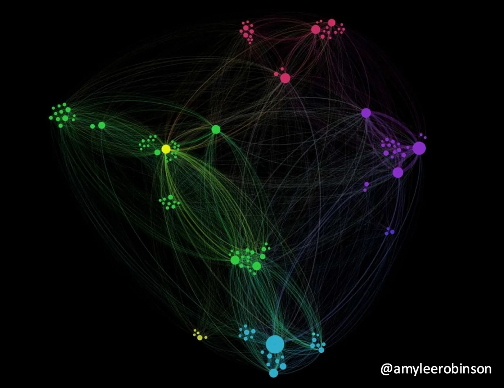
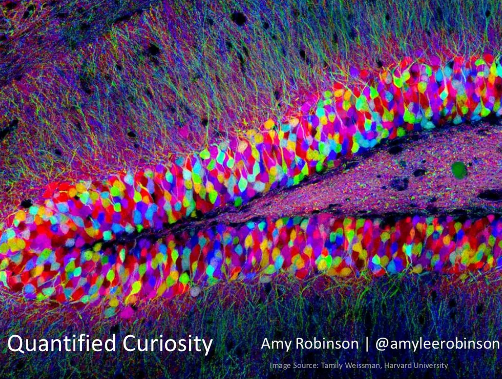
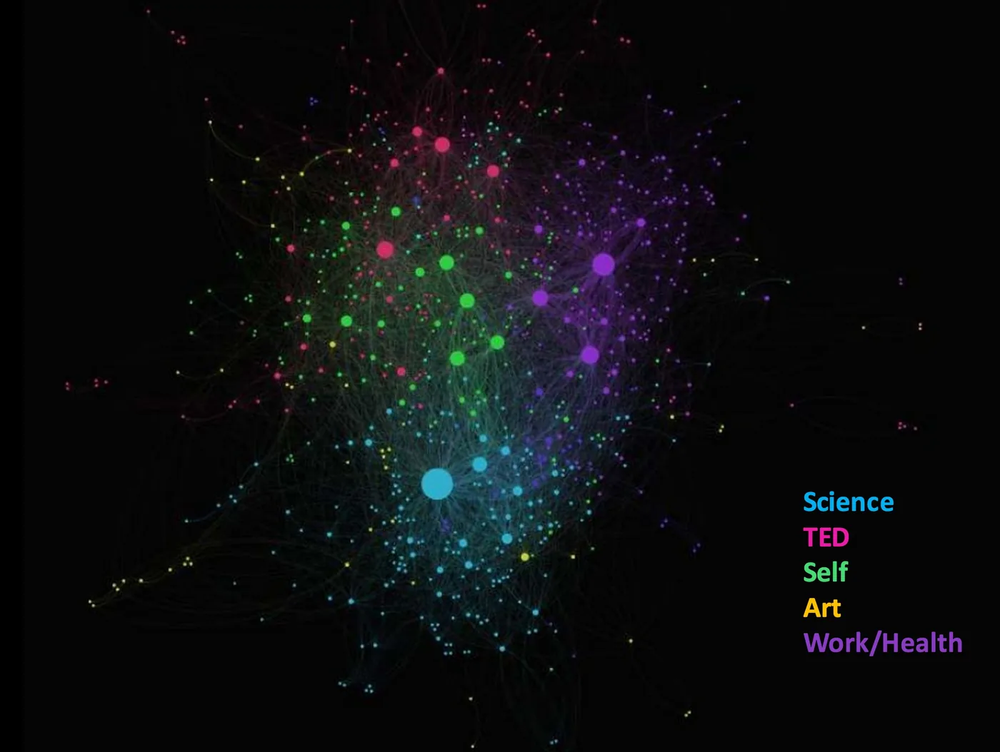
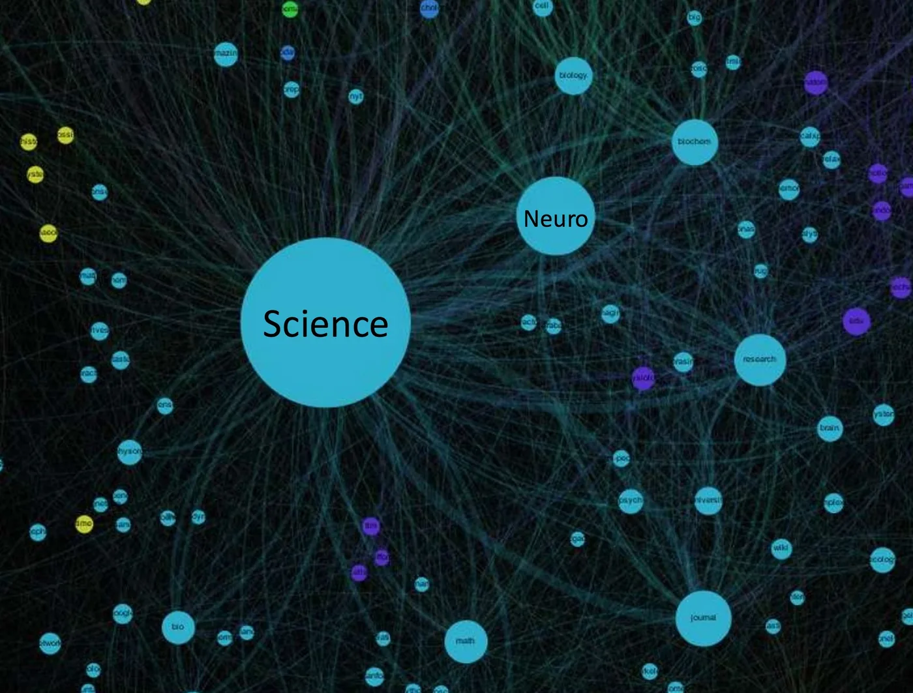
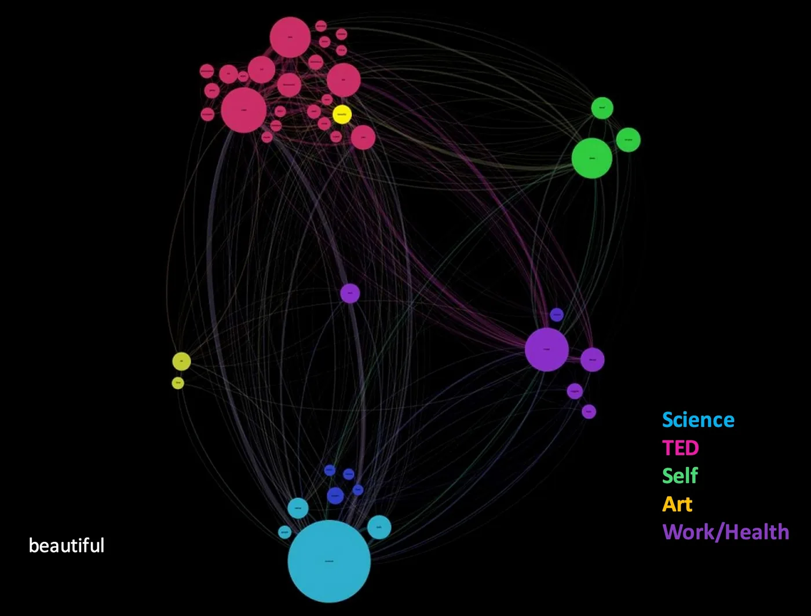
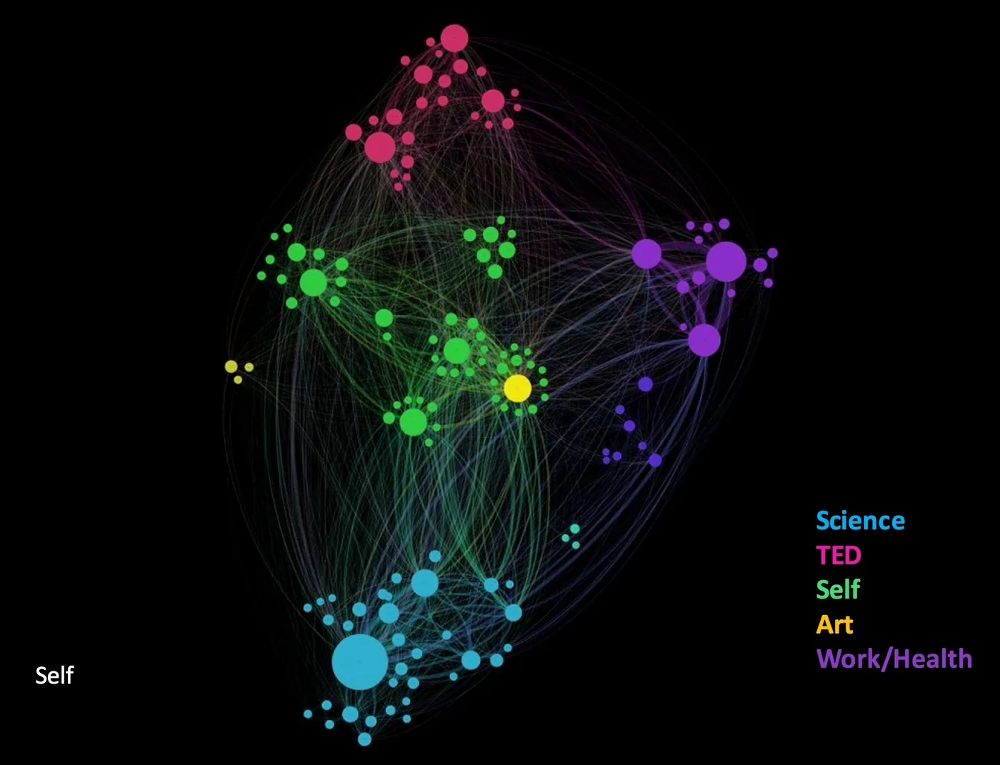
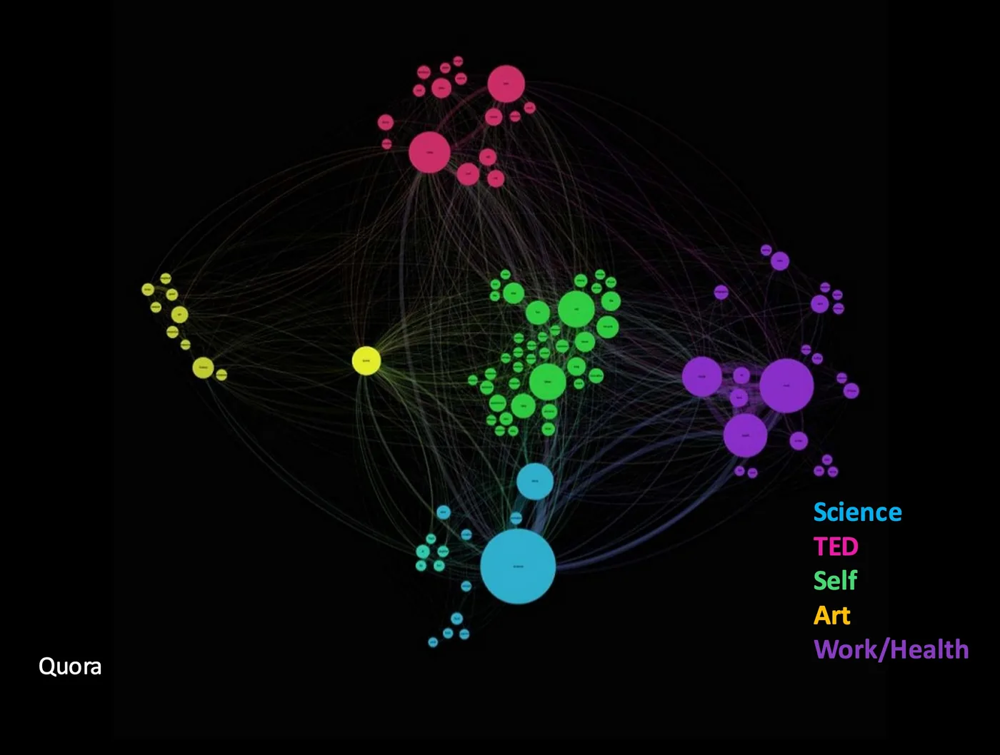

Blog · March 18, 2013
Quantified Curiosity 2.0

Before you watch it, think about this. Who are you? Seriously, how do you answer that question? Does who you are change over time? How? Why? When? What if you could explore these questions empirically, with data that correlates with significant events in your life, data that collectively integrates to tell a story of who you are? This is what I begin to explore with Quantified Curiosity, a network exploration into the ideas that fuel me. As of March 2013, I’ve connected with a couple academic and corporate network powerhouses to this concept a few orders of magnitude higher and deeper. More on that soon.
Over the coming months, stay tuned for the evolution of questions, new visualizations, and curiosity progress reports. A goal of this side project is to create a platform that allows anyone to explore and graph his or her ideas over time. Here’s to tackling fundamental questions! Ping me if you are interested in brainstorming. Now, on with the evolution of ideas!
Transcript with slide selections:

My name is Amy Robinson and I am here to share Quantified Curiosity.
I am very curious how the ideas that I encounter and the new things that I discover integrate and infuse to form who I am and who I will become.
A stranger at a TED Conference once walked up to me and said “Hi Amy, What inspires you?” Besides actually making me think about what inspires me, it made me think about how the things that inspire me change over time. I am not a constant, I am very dynamic; however, it’s hard to remember how I change and to keep it in perspective.
Those 5 seconds consequently have mattered much more than just 5 seconds and I wonder if the same is true for ideas. So I’ve been tracking them.
How? I email myself “interestingness.” So when I look at say an article or write notes or watch a cool video; anything that makes me think “hm, that’s interesting,” I email it to myself. For this talk I’ve compiled 6 months of this data into..a pretty big spreadsheet and some beautiful network visualizations.
Each line is an idea, an entry, and the data has attributes like a date, a link, an ngram (which is the subject and body text of the email), it’s tagged with topics and it’s also given an interestingness ranking of 1 being low and 5 being high.
Six months worth of data came to 770 unique entries – or ideas – in 772 different topics. Once this data was organized into a spreadsheet I was able to analyze it and look at it in a completely new way.
This is a weighted graph [below] of the most important topics of all topics that were used at least 40 times and weighted either 4, the green bar for “important,” or 5, the blue bar for “most important,” they show up on this graph. You can see based on the importance that the most prevalent topics vary. For example, the green bar most important is “journal,” which is peer reviewed literature, not my personal notes, followed by biology and neuro. Whereas if you look at the blue bar “notes,” my personal notes, come up first.
You can also look at most important entries over time [graph below]. The most important entries tend to occur in clusters. I wonder do these clusters actually correspond to something? There’s a huge cluster in February, 14 items in 3 days. They actually correspond to my starting a new side project, photos of notes, it’s a tumblr blog where I just publish photos of my notes. In that case, yes, that cluster was something real. And I wondered, is this true for the other clusters?
Turns out, yes. In March there’s another one where 21 items occur in a period of 21 days. It corresponds to something kind of goofy that I do — lifebonus emails. I send these out now quite periodically to my friends saying, ya know, share something beautiful, inspiring, intelligent or entertaining that you’ve discovered in the past week and they get a hypothetical lifebonus. It’s goofy, it’s fun, it rocks the inbox but again the data actually corresponds to my doing something new.
How else can we actually explore this?
We were able to formulate these ideas into Gephi, a free network graphing program. The way this works: the circles are called nodes and they correspond to topics that are tagged with ideas. The size of the nodes indicate how many times they were used in tandem with other nodes. The edges – the lines between them – are the actual ideas that are co-tagged with the two different topics.


The yellow dot here is the tag “ideas” within all my ideas data. You can see the little green dot sort of off to the side. It exhibits what’s called a high “betweenness centrality.” In social network graphs that represent people, those nodes that have a high betweenness centrality are the ones that bridge gaps between distinct communities. They’re interdisciplinary in a way and it made me wonder, could the same be true for ideas? Those “in between” ideas, and how can I decipher this information?

When I actually look at the graph of “video,” it made me wonder how we could take this information and make it interactive. Imagine you were panning through this on a computer and rather than just looking at nodes, you could actually look at the content relative to where they’re tagged and other things
Here is the tag for “self.” A lot of this was intuitive — “TED,” “science,” — I’m geeky, I love TED. But one dot that very much surprised me, closely related to me — the green dot of Quora, Quora the social Q&A network.


These are beautiful graphs; they’re elegant and nice to look at but what do they mean? What can you actually learn from exploring ideas in this type of way?
It puts them into context. By being able to see my ideas and see how they’re connected to each other, I’m able to think about myself in new ways. I’m able to see, rather than just the fact that I started a new blog or I sent out a lifebonus email to friends, I can see how that evolve and where it came about. Based on the features of these graphs, I can actually understand more about where my ideas come from and how they change over time. And there’s a lot that can be done in Gephi that I haven’t even gotten to yet.
Really, like that one line at TED, those 5 seconds carried a much greater weight than just 5 seconds. I think the same can be true of ideas. How do I remember what was new to me four years ago? How do I understand how the ideas that i encounter today are influencing me as a function of time? And I really wonder how I can discover more ways to think about myself and how I can explore how my mind looks relative to other people’s. I wonder if there are hidden patterns inside of this.
I don’t know the answers to these questions but I think that there are answers, or can be. I’m very curious to understand who I am and how I exist. Consciousness is my greatest curiosity and in the end I’ve learned that we need to think socially about how to better think about thinking. This was a momentous task to put all this together and it can certainly be done more efficiently. Remember, you are extraordinary. Your mind is exquisite. You, the things that you think about and the things that are important to you, create who you are and who you will become. So imagine how you might answer the question “what inspires you?” if you had a quantified mind in your cognitive toolkit.
Thank you.
First published on my old blog, amyrobinson.wordpress.com, March 18, 2013.